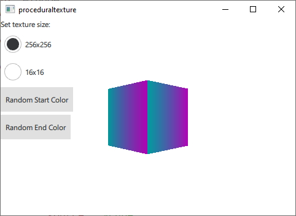

Qt Quick 3D - Procedural Texture Example
Demonstrates how to provide custom texture data from C++ or QML.

This example makes use of QQuick3DTextureData and the textureData property of Texture to provide texture data generated dynamically at runtime instead of loading it from a static asset. For demonstration purposes this example generates two gradient textures in C++ and QML respectively.
First we define a C++ class for our texture data. We make it a subclass of QQuick3DTextureData. This is not stricly necessary, since there are no virtual functions, but it is much more convenient to have everything in one class. We define the properties we are going to use, and add QML_NAMED_ELEMENT to make it available from QML:
class GradientTexture : public QQuick3DTextureData { Q_OBJECT Q_PROPERTY(int height READ height WRITE setHeight NOTIFY heightChanged) Q_PROPERTY(int width READ width WRITE setWidth NOTIFY widthChanged) Q_PROPERTY(QColor startColor READ startColor WRITE setStartColor NOTIFY startColorChanged) Q_PROPERTY(QColor endColor READ endColor WRITE setEndColor NOTIFY endColorChanged) QML_NAMED_ELEMENT(GradientTexture) ...
We add a function to update the texture. It uses QQuick3DTextureData::setSize, and QQuick3DTextureData::setFormat to configure the texture, and QQuick3DTextureData::setTextureData to set the image data:
void GradientTexture::updateTexture() { setSize(QSize(m_width, m_height)); setFormat(QQuick3DTextureData::RGBA8); setHasTransparency(false); setTextureData(generateTexture()); }
The function generateTexture creates a QByteArray of the correct size, and fills it with image data:
QByteArray GradientTexture::generateTexture() { QByteArray imageData; // Create a horizontal gradient between startColor and endColor // Create a single scanline and reuse that data for each QByteArray gradientScanline; gradientScanline.resize(m_width * 4); // RGBA8 for (int x = 0; x < m_width; ++x) { QColor color = linearInterpolate(m_startColor, m_endColor, x / float(m_width)); int offset = x * 4; gradientScanline.data()[offset + 0] = char(color.red()); gradientScanline.data()[offset + 1] = char(color.green()); gradientScanline.data()[offset + 2] = char(color.blue()); gradientScanline.data()[offset + 3] = char(255); } for (int y = 0; y < m_height; ++y) imageData += gradientScanline; return imageData; }
We call updateTexture each time a property is changed:
void GradientTexture::setStartColor(QColor startColor) { if (m_startColor == startColor) return; m_startColor = startColor; emit startColorChanged(m_startColor); updateTexture(); }
Finally, we can use our new texture from QML:
Texture { id: textureFromCpp minFilter: applicationState.filterMode magFilter: applicationState.filterMode textureData: gradientTexture GradientTexture { id: gradientTexture startColor: applicationState.startColor endColor: applicationState.endColor width: applicationState.size height: width } }
It is also possible to generate the same texture data in QML. In this case we use the ProceduralTextureData component:
Texture { id: textureFromQML minFilter: applicationState.filterMode magFilter: applicationState.filterMode textureData: gradientTextureDataQML ProceduralTextureData { id: gradientTextureDataQML property color startColor: applicationState.startColor property color endColor: applicationState.endColor width: applicationState.size height: width textureData: generateTextureData() function linearInterpolate(startColor : color, endColor : color, fraction : real) : color{ return Qt.rgba( startColor.r + (endColor.r - startColor.r) * fraction, startColor.g + (endColor.g - startColor.g) * fraction, startColor.b + (endColor.b - startColor.b) * fraction, startColor.a + (endColor.a - startColor.a) * fraction ); } function generateTextureData() { let dataBuffer = new ArrayBuffer(width * height * 4) let data = new Uint8Array(dataBuffer) let gradientScanline = new Uint8Array(width * 4); for (let x = 0; x < width; ++x) { let color = linearInterpolate(startColor, endColor, x / width); let offset = x * 4; gradientScanline[offset + 0] = color.r * 255; gradientScanline[offset + 1] = color.g * 255; gradientScanline[offset + 2] = color.b * 255; gradientScanline[offset + 3] = color.a * 255; } for (let y = 0; y < height; ++y) { data.set(gradientScanline, y * width * 4); } return dataBuffer; } } }
Just like in C++ we fill a QByteArray with image data that reflects the size and format of the texture. When doing this from QML use the ArrayBuffer type to avoid unnecessary type conversion.
Files:
- proceduraltexture/CMakeLists.txt
- proceduraltexture/Main.qml
- proceduraltexture/ProceduralTextureExample/Main.qml
- proceduraltexture/ProceduralTextureExample/proceduraltexture_qml_module_dir_map.qrc
- proceduraltexture/ProceduralTextureExample/qmldir
- proceduraltexture/gradienttexture.cpp
- proceduraltexture/gradienttexture.h
- proceduraltexture/main.cpp
- proceduraltexture/proceduraltexture.pro
- proceduraltexture/qmldir